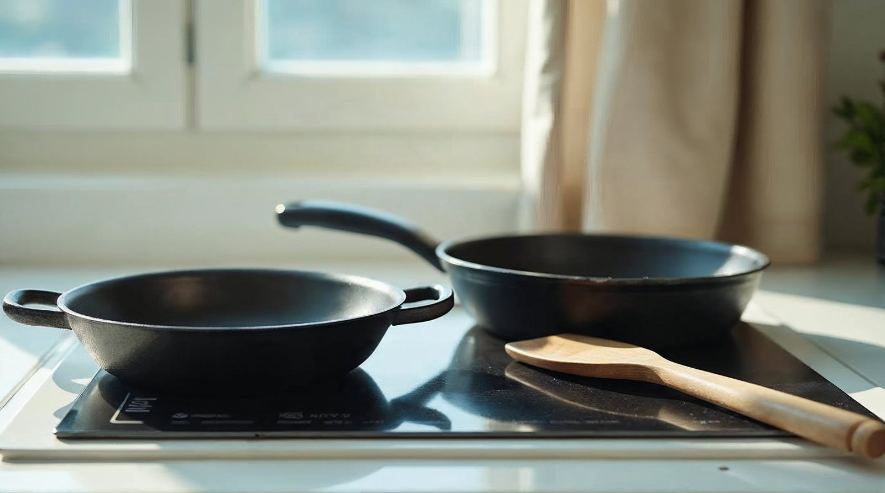
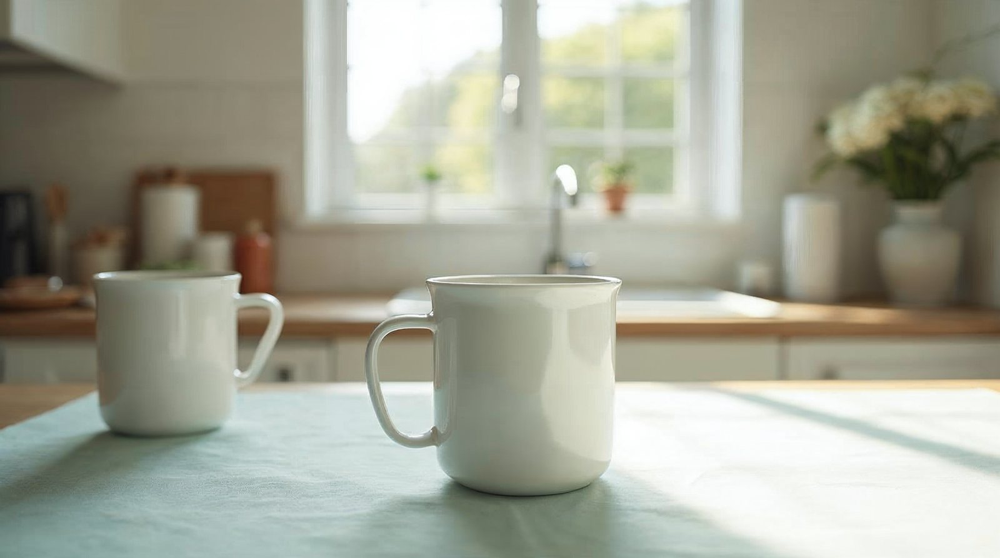

이종호 한의사 감수좋은꿈참사랑한의원 대표원장 (한의사 면허번호 19769)발행 2026-11-26 · 수정 2026-11-26
이 글의 차례
아침에 커피잔을 들어 올리는데 팔꿈치 바깥쪽이 '찌릿' 합니다. 행주를 비틀어 짤 때, 마우스를 오래 쥐고 있다가 손을 펼 때, 문손잡이를 돌릴 때도 같은 자리가 시큰합니다. 테니스는 쳐 본 적도 없는데 '테니스엘보' 같다는 말을 듣고 고개를 갸웃하게 됩니다.
팔꿈치 바깥쪽 뼈가 튀어나온 자리가 아프면 흔히 테니스엘보, 안쪽이 아프면 골프엘보라고 부릅니다. 이름과 달리 운동보다 손목과 손가락을 반복해서 쓰는 생활에서 더 자주 생깁니다. 손목을 젖히고 손을 쥐는 근육들이 팔꿈치에 모여 붙는 자리, 그 힘줄이 지쳐 예민해진 상태입니다.
저는 이럴 때 아픈 자리가 정확히 어디인지, 손목과 손가락을 어떻게 쓰시는지, 목에서 내려오는 저림은 없는지를 먼저 살핍니다. 체외충격파는 그렇게 확인한 뒤 오래 이어지는 힘줄 통증에 검토할 수 있는 방법 가운데 하나입니다.
진료실에서 이런 말씀을 자주 듣습니다. "팔꿈치가 아픈데 왜 손목을 자꾸 보세요?" 또 "쉬면 좀 낫다가 일하면 다시 아파요" 하시며 한숨을 쉬십니다. 팔은 쉬게 하고 싶어도 하루 종일 쓸 수밖에 없는 부위라, 그 답답함이 더 클 것 같습니다.
설거지, 키보드, 아이 안기, 장바구니까지 손을 쓰지 않는 일은 거의 없습니다. 그러니 팔꿈치 통증은 작아 보여도 하루 전체를 조금씩 불편하게 만듭니다. 오늘은 이 시큰한 팔꿈치를 어떻게 살피는지, 체외충격파는 어디까지 도울 수 있는지 차근차근 이야기해 보겠습니다.
왜 팔꿈치 힘줄이 아플까요
손목을 위로 젖히고 손가락을 펴는 근육들은 팔꿈치 바깥쪽 뼈에, 손목을 굽히고 손을 쥐는 근육들은 안쪽 뼈에 모여 붙습니다. 손을 쓸 때마다 그 힘이 결국 팔꿈치의 작은 자리로 모이는 셈입니다.
마우스를 쥐고 손목을 살짝 젖힌 채 몇 시간씩 일하거나, 무거운 프라이팬을 한 손으로 들고, 행주나 빨래를 비틀어 짜고, 망치나 드라이버를 자주 쓰면 그 자리에 부담이 쌓입니다. 아이를 안을 때 손바닥을 위로 해서 받치는 자세도 안쪽 힘줄에 부담을 줍니다.
힘줄은 근육보다 혈액이 적게 가는 조직이라 회복이 느립니다. 그래서 하루 무리하고 하루 쉬는 정도로는 다 풀리지 않고, 쌓인 피로가 다시 쓰는 일과 겹치면서 몇 주, 몇 달씩 이어지기 쉽습니다. 처음엔 특정 동작에서만 아프다가 점점 가만히 있어도 욱신거리는 경우도 있습니다.
예전에는 염증이라고만 설명하던 이 통증을, 요즘은 힘줄 조직이 지쳐 구조가 조금씩 바뀌는 과정으로 보는 시각이 많습니다. 그래서 염증만 가라앉히는 것보다 힘줄이 다시 버틸 수 있도록 쓰는 양과 방법을 함께 조절하는 것이 중요하다고 이야기됩니다.
테니스엘보와 골프엘보, 그리고 비슷해 보이는 다른 통증
바깥쪽이 아프면 손목을 위로 젖힌 채 버틸 때, 손바닥을 아래로 하고 물건을 들 때 통증이 또렷해지는 경우가 많습니다. 안쪽이 아프면 손목을 굽히거나 손을 꽉 쥐고 버틸 때, 손바닥을 위로 해서 물건을 받칠 때 더 아픕니다.
헷갈리기 쉬운 통증도 있습니다. 넷째·다섯째 손가락이 저리고 팔꿈치 안쪽을 부딪힌 듯 찌릿하다면 팔꿈치 안쪽을 지나는 신경이 눌리는 경우를 생각해 봐야 합니다. 목을 돌릴 때 팔 통증이 같이 변하거나 손가락까지 저림이 내려오면 목에서 오는 통증일 수 있습니다.
넘어지면서 손을 짚은 뒤 팔꿈치가 붓고 끝까지 펴지지 않는다면 뼈나 관절의 손상을 먼저 확인해야 합니다. 이런 구분은 한 가지 동작으로 정해지지 않아, 여러 동작을 해 보고 필요하면 영상 검사를 함께 봅니다.
체외충격파는 팔꿈치에서 어떻게 쓰나요
체외충격파는 피부를 절개하지 않고 몸 밖에서 짧은 압력파를 아픈 힘줄 주변에 전달하는 방법입니다. 팔꿈치 바깥쪽 힘줄 통증은 체외충격파가 연구되어 온 부위 가운데 하나로, 오래 예민해진 힘줄에 자극을 주어 몸이 그 자리를 다시 돌보도록 돕는 쪽으로 설명됩니다.
다만 연구 결과는 한결같지 않고, 사람마다 반응도 다릅니다. 막 아프기 시작한 팔꿈치라면 먼저 쓰는 양을 조절하며 지켜보는 쪽이 맞을 수 있습니다. 쉬고 조절해도 몇 주에서 몇 달째 같은 통증이 반복될 때 체외충격파를 검토합니다.
팔꿈치는 뼈가 피부 가까이 있어 받는 느낌이 또렷한 편입니다. 두드리는 느낌, 뼈가 울리는 듯한 느낌, 평소 아프던 자리가 더 선명해지는 느낌이 들 수 있습니다. 그래서 장비 끝의 각도와 자리를 조금씩 옮겨 가며, 낮은 강도에서 시작해 말씀을 들으며 맞춥니다.
체외충격파가 대신하기 어려운 것도 있습니다. 손을 쓰는 습관이 그대로라면 같은 자리가 다시 지칠 수 있고, 신경이 눌려 생긴 저림은 다른 방향으로 살펴야 합니다. 그래서 받는 동안에도 손목과 손을 어떻게 쓸지 같이 정합니다.
저는 체외충격파를 혼자 일하는 도구로 보지 않습니다. 힘줄에 자극을 주는 날과, 그사이 힘줄이 버티는 힘을 천천히 되찾는 생활이 함께 가야 한다고 말씀드립니다. 손목을 천천히 굽혔다 펴는 가벼운 움직임도 진찰 뒤 아프지 않은 범위에서 같이 정합니다.
몇 번, 어떤 간격으로 할지는 진찰 뒤 함께 정합니다. 보통은 간격을 두고 받으며 그사이 팔꿈치가 어땠는지를 듣고 다음 자리와 강도를 정합니다. 받은 뒤 하루 이틀 시큰함이 남을 수 있어 그 변화도 함께 여쭙습니다.
받기 전에 미리 알려 주세요
- 혈액을 묽게 하는 약(항응고제·항혈소판제)을 드시는 경우
- 임신 중이거나 임신 가능성이 있는 경우
- 팔꿈치나 팔에 수술로 넣은 금속이 있거나, 심장박동기 같은 전자 의료기기가 있는 경우
- 치료할 자리에 상처, 긁힌 자국, 습진, 염증이 있는 경우
- 최근 같은 팔꿈치에 스테로이드 주사를 맞은 경우
팔꿈치 주사를 맞은 날짜와 횟수를 알려 주시면 힘줄 상태를 보며 언제 할지 신중하게 정합니다. 해당하는지 헷갈리셔도 괜찮으니 일단 말씀해 주세요. 드시는 약은 처방한 의사와 상의 없이 줄이거나 끊지 않습니다.

먼저 이렇게 여쭙니다
- 바깥쪽과 안쪽 가운데 어디가, 손가락 하나로 짚을 만큼 좁게 아픈가요?
- 컵 들기, 행주 짜기, 문손잡이 돌리기, 마우스 쥐기 가운데 어떤 동작이 가장 불편한가요?
- 하루에 컴퓨터, 휴대폰, 요리, 공구를 쓰는 시간은 얼마나 되나요?
- 넷째·다섯째 손가락 저림이나 손에 힘이 빠지는 느낌이 있나요?
- 목을 돌릴 때 팔 통증이 달라지나요?
- 지금까지 받은 주사, 약, 보호대, 물리치료는 무엇인가요?
처음부터 다 기억하지 못하셔도 괜찮습니다. 생각나는 것부터 말씀해 주시면 나머지는 제가 하나씩 여쭙겠습니다.
체외충격파를 받는 날은 이렇게 흘러갑니다
먼저 지난번 이후 가장 불편했던 동작과 그날 한 일을 듣습니다. 그다음 손목을 젖히고 버티기, 주먹 쥐기 같은 같은 동작으로 다시 확인합니다. 같은 동작으로 비교해야 작은 변화도 읽을 수 있습니다.
팔꿈치까지 걷어 올리기 쉬운 옷이면 편합니다. 팔을 베개나 받침 위에 편하게 올려놓고, 가장 예민한 지점을 손가락으로 짚어 확인합니다. 필요하면 초음파로 힘줄이 붙는 자리를 다시 봅니다.
장비는 원장이 직접 대고 낮은 강도로 시작합니다. 받는 중에 여러 번 괜찮은지 여쭙고, 뼈가 울리는 느낌이 강하면 각도와 강도를 바꿉니다. 받은 자리와 강도, 받은 뒤 느낌은 기록해 두었다가 다음 진료에서 비교합니다.

일상에서 먼저 해 볼 수 있는 것
- 물건은 손바닥을 위로 해서 몸 가까이 들고, 무거운 냄비는 두 손으로 들기
- 마우스와 키보드를 몸 가까이 두고, 손목이 위로 꺾이지 않게 받침 쓰기
- 행주나 빨래를 비틀어 짜는 대신 눌러서 물기 빼기
- 30분~1시간마다 손을 내려 털고, 손목을 천천히 굽혔다 펴기
통증이 심한 날 팔꿈치를 아예 쓰지 않으면 마음은 편하지만, 너무 오래 쉬면 힘줄이 버티는 힘도 같이 떨어질 수 있습니다. 아프지 않은 범위에서 가볍게 쓰고, 통증을 키우는 동작만 골라 줄이는 쪽을 권합니다.
체외충격파를 받은 날은 무거운 것 들기와 팔꿈치를 세게 주무르기는 쉬시길 권합니다. 받은 자리가 평소와 다르게 붓거나 멍이 오래가면 전화로 알려 주세요.
이런 생활에서 자주 이야기됩니다
예를 들어 하루 종일 마우스를 쥐고 일하는 사무직이라면 의자와 책상 높이, 마우스 위치, 쉬는 간격을 함께 봅니다. 손목이 젖혀진 채 오래 고정되는 자세가 바깥쪽 힘줄에 조용히 부담을 쌓기 때문입니다.
요리를 많이 하는 분은 무거운 웍이나 프라이팬을 한 손으로 흔드는 동작, 칼질을 오래 하는 시간을 여쭙니다. 미용이나 손으로 하는 기술 일, 공구를 자주 쓰는 일도 비슷합니다. 일을 바꾸기는 어려우니 같은 일을 하면서 팔꿈치가 덜 애쓰는 방법을 찾아봅니다.
아기를 안고 달래는 시기에는 손바닥을 위로 해서 아이를 받치는 시간이 길어 안쪽이 아프기 쉽습니다. 이럴 땐 팔뚝 전체로 받치는 자세, 수유 쿠션 같은 도구를 같이 이야기합니다.
얼마나 지켜보고, 언제 상담할까요
이사나 대청소, 김장처럼 손을 많이 쓴 뒤 생긴 시큰함이라면 며칠 동안 무거운 것을 줄이고 손목을 쉬게 하며 지켜볼 수 있습니다. 그동안 통증이 조금씩 가라앉는지 살펴보세요.
2~3주가 지나도 컵을 들 때마다 같은 자리가 아프거나, 아침에 팔꿈치가 뻣뻣하고 욱신거리는 날이 늘어난다면 진찰을 받아 보시길 권합니다. 오래 참을수록 아픈 팔을 아끼느라 반대쪽 팔과 어깨가 더 일하게 되기 때문입니다.
한의원에서 함께 살필 수 있는 경우
- 팔꿈치 바깥쪽이나 안쪽 통증이 몇 주에서 몇 달째 이어지는 경우
- 손을 쥐거나 물건을 들 때마다 같은 자리가 시큰한 경우
- 팔꿈치와 함께 손목, 어깨, 목이 굳어 있는 경우
- 쉬면 가라앉다가 일하면 다시 아파지는 일이 반복되는 경우
좋은꿈참사랑한의원에서는 문진과 맥으로 몸 상태를 먼저 보고, 손목과 팔꿈치, 목을 함께 움직여 통증이 어디서 오는지 가려 봅니다. 필요하다고 판단될 때 초음파로 힘줄을 확인하고, 체외충격파가 맞는다고 판단되면 원내 장비(제우스·한일티엠) 가운데 부위에 맞는 것을 골라 원장이 직접 진행합니다.
팔뚝 근육이 굳어 있으면 침이나 약침을 이어서 쓰기도 하고, 어깨와 목의 균형이 함께 관련되어 보이면 추나를 함께 살핍니다. 체외충격파를 할지, 몇 번 어떤 간격으로 할지, 비용은 어떤지는 진찰 뒤 이유와 함께 안내해 드립니다. 미리 궁금하시면 방문 전 전화로 확인해 주세요.
이렇게 기록해 오시면 상담이 쉬워집니다
- 가장 불편한 동작 세 가지와 그때의 불편 정도(0~10점)
- 하루 중 손을 많이 쓴 일과 그 시간
- 통증이 심해진 날 그 전날 한 일
- 체외충격파를 받은 뒤 하루, 사흘째의 느낌
같은 동작을 같은 방식으로 기록해 두면 작은 변화도 놓치지 않게 됩니다. 기억나는 만큼만 적어 오셔도 충분합니다.
이런 증상은 먼저 확인이 필요합니다
- 넘어지면서 손을 짚은 뒤 팔꿈치가 붓고 끝까지 펴지거나 굽혀지지 않는 경우
- 팔꿈치가 빨갛고 뜨겁게 붓고 열이 나는 경우
- 손가락 저림이 점점 심해지거나 젓가락질, 단추 채우기가 어려워진 경우
- 손 근육이 눈에 띄게 마르는 느낌이 드는 경우
- 쉬어도 밤마다 통증이 심해지는 경우
이런 경우에는 체외충격파보다 정형외과나 신경과에서 원인을 먼저 확인하는 것이 순서입니다. 팔 통증이 가슴 답답함, 식은땀, 숨참과 함께 온다면 지체하지 말고 가까운 응급실로 가셔야 합니다.
팔꿈치는 하루에도 수백 번 우리 대신 일해 주는 곳입니다. 쉬게 해 주고 싶어도 쉬기 어려운 곳이라 더 답답하셨을 겁니다. 일을 멈추지 않고도 팔꿈치가 덜 애쓰는 방법을 같이 찾아보겠습니다. 다음에 오시면 커피잔을 들 때 어땠는지부터 여쭙겠습니다.
함께 읽으면 좋은 글
- 팔꿈치 바깥쪽·안쪽이 시큰한 테니스엘보와 골프엘보는 어떻게 살피나요?
- 엄지 쪽 손목이 아파 휴대폰 쥐기도 불편할 때는 어떻게 살피나요?
- 장바구니를 들고 언덕길을 오르고 나면 손목과 팔꿈치가 시큰할 때는 어떻게 살피나요?
- 체외충격파 전에 꼭 미리 말씀해 주셔야 하는 경우는요?
여쭙는 것
- 바깥쪽과 안쪽 가운데 어디가, 손가락 하나로 짚을 만큼 좁게 아픈가요?
- 컵 들기, 행주 짜기, 문손잡이 돌리기, 마우스 쥐기 가운데 어떤 동작이 가장 불편…
- 하루에 컴퓨터, 휴대폰, 요리, 공구를 쓰는 시간은 얼마나 되나요?
생활에서 해 볼 것
- 물건은 손바닥을 위로 해서 몸 가까이 들고, 무거운 냄비는 두 손으로 들기
- 마우스와 키보드를 몸 가까이 두고, 손목이 위로 꺾이지 않게 받침 쓰기
- 행주나 빨래를 비틀어 짜는 대신 눌러서 물기 빼기
한의원에서 함께 살필 것
- 팔꿈치 바깥쪽이나 안쪽 통증이 몇 주에서 몇 달째 이어지는 경우
- 손을 쥐거나 물건을 들 때마다 같은 자리가 시큰한 경우
- 팔꿈치와 함께 손목, 어깨, 목이 굳어 있는 경우
먼저 확인이 필요한 신호
- 넘어지면서 손을 짚은 뒤 팔꿈치가 붓고 끝까지 펴지거나 굽혀지지 않는 경우
- 팔꿈치가 빨갛고 뜨겁게 붓고 열이 나는 경우
- 손가락 저림이 점점 심해지거나 젓가락질, 단추 채우기가 어려워진 경우
한눈에 보는 표
| 구분 | 핵심 |
|---|---|
| 여쭙는 것 | 바깥쪽과 안쪽 가운데 어디가, 손가락 하나로 짚을 만큼 좁게 아픈가요? 컵 들기, 행주 짜기, 문손잡이 돌리기, 마우스 쥐기 가운데 어떤 동작이 가장 불편한가요? |
| 생활에서 해 볼 것 | 물건은 손바닥을 위로 해서 몸 가까이 들고, 무거운 냄비는 두 손으로 들기 마우스와 키보드를 몸 가까이 두고, 손목이 위로 꺾이지 않게 받침 쓰기 |
| 한의원에서 함께 살필 것 | 팔꿈치 바깥쪽이나 안쪽 통증이 몇 주에서 몇 달째 이어지는 경우 손을 쥐거나 물건을 들 때마다 같은 자리가 시큰한 경우 |
| 먼저 확인이 필요한 신호 | 넘어지면서 손을 짚은 뒤 팔꿈치가 붓고 끝까지 펴지거나 굽혀지지 않는 경우 팔꿈치가 빨갛고 뜨겁게 붓고 열이 나는 경우 |
자주 묻는 질문
테니스를 안 치는데도 테니스엘보가 생기나요?
네. 이름과 달리 마우스, 요리, 공구처럼 손목과 손가락을 반복해서 쓰는 생활에서 더 자주 생깁니다.
팔꿈치 보호대를 차면 도움이 되나요?
팔뚝에 차는 띠 형태 보호대는 힘줄에 가는 부담을 나누는 데 쓰이기도 합니다. 너무 꽉 조이면 저림이 생길 수 있어 차는 위치와 세기를 같이 확인합니다.
체외충격파를 받으면 일을 쉬어야 하나요?
대부분 일상은 이어 가실 수 있습니다. 받은 날은 무거운 것 들기와 무리한 손 사용을 줄이시길 권합니다.
주사를 여러 번 맞았는데 체외충격파를 해도 되나요?
주사를 맞은 날짜와 횟수를 알려 주세요. 힘줄 상태를 보면서 언제, 어떻게 할지 신중하게 정합니다.
손가락이 저린데 팔꿈치 문제인가요?
넷째·다섯째 손가락 저림은 팔꿈치 안쪽을 지나는 신경과 관련될 수 있고, 목에서 오는 경우도 있습니다. 진찰로 먼저 구분해 봅니다.
좋은꿈참사랑한의원은 재진 때 지난번 이야기부터 이어서 여쭙니다. 진료시간과 예약은 오시는 길에서 확인하세요.
어디서 상담받을 수 있나요?
좋은꿈참사랑한의원은 서울 동작구 만양로2길 2 신성빌딩 3층·5층(서울 동작구 상도동, 7호선 상도역 3번 출구 근처)에 있습니다. 한의사 3명(이종호 대표원장, 조영기 수석진료원장, 정원영 진료원장)이 진료합니다. 진료시간은 평일 09:30~20:00(점심 13:00~14:00), 토·일·공휴일 09:30~15:00이며, 방문 전 전화로 확인을 권합니다. 예약은 네이버 예약, 카카오톡 상담, 전화 02-815-7510로 받습니다.
이 글은 일반적인 건강 정보이며 개인의 진단이나 치료를 대신하지 않습니다. 증상이 있거나 복용 중인 약이 있다면 진료를 통해 확인하세요. 치료 효과는 개인마다 다를 수 있습니다.
작성 기준: 일반적으로 알려져 있는 건강 정보를 참고해 정리했습니다(대표원장 감수). 증상 기록은 1~2주 동안 하루 1회, 비슷한 시간에 적어 오시면 지난 상태와 비교하기 쉽습니다.